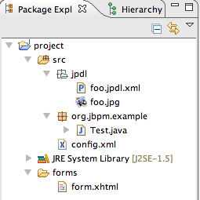
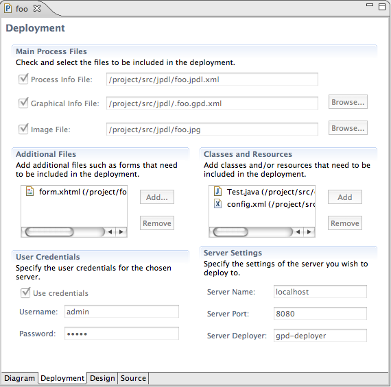

|
The deployment page has been completely revised. There are now separate fields for the three most important files that are usually
included in a deployment archive: the process file, the graphical info file and the process image. Additional files and/or classes and
resources can be added from the workspace. Finally, the deployment credentials and server information can be specified as before.
The different actions to deploy, ping the server and save the deployment archive have been moved to the new jBPM menu mentioned earlier.

On the image above you see a typical project layout which is referenced from the deployment page illustrated below.

|